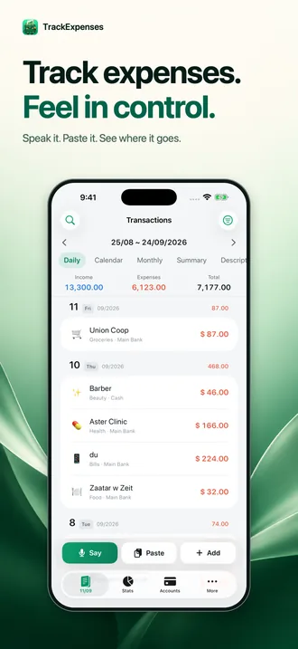
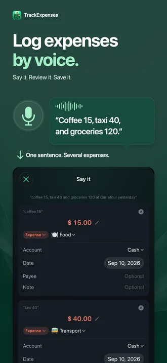
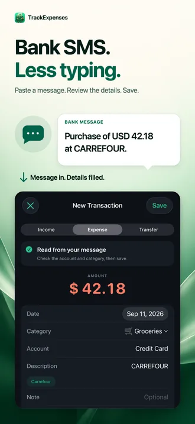
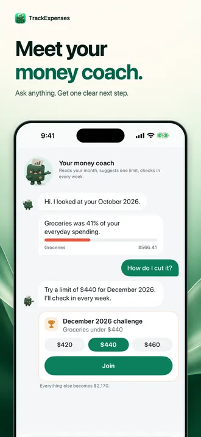
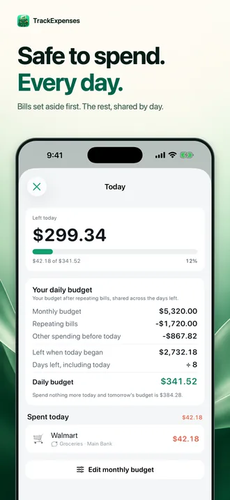
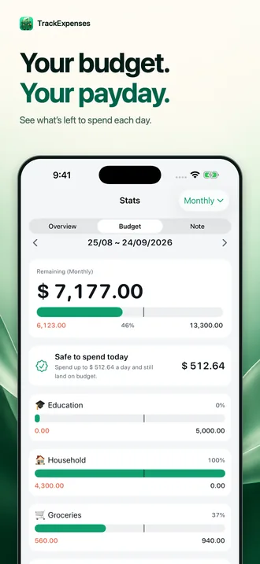
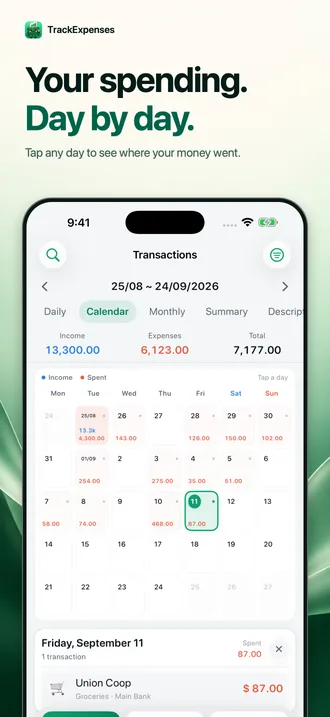
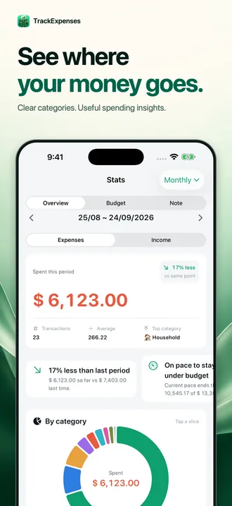
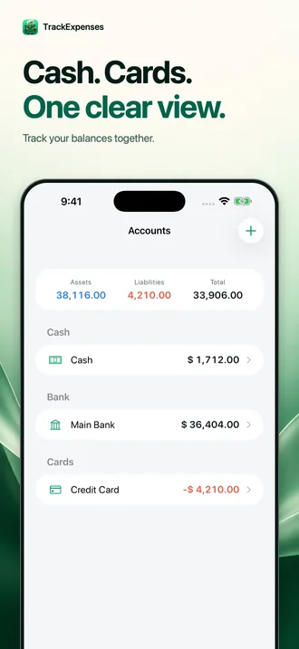

TrackExpenses press kit.
Expense Tracker: SMS & Voice (TrackExpenses) is an iPhone, iPad and Mac expense tracker that keeps itself up to date: bank alerts log themselves, you can say several purchases in one sentence, and it tells you what you can spend today. Everything on this page may be used in coverage.
ZIP, about 7 MB: app icon, English and Arabic screenshots, share images in five languages.
Facts
- Name
- Expense Tracker: SMS & Voice (short: TrackExpenses). In Mexico “Control de Gastos por Voz”, in Brazil “Controle de Gastos por Voz”, in Germany „Haushaltsbuch: Budget & Coach“.
- Developer
- Mohamed Elatabany, an independent developer in the United Arab Emirates
- Platforms
- iPhone and iPad with iOS/iPadOS 17 or later; Mac computers with Apple silicon
- Languages
- English, Arabic (right to left), German, Spanish (Latin America), Portuguese (Brazil)
- First release
- September 2026 on the App Store; version 1.16.0 on 18 November 2026
- Business model
- Free to download with a complete free ledger; Pro as a monthly or yearly subscription or a one-time lifetime purchase
- Category
- Finance
- Privacy
- No bank login and no app account. The ledger stays on the device, with optional private iCloud sync
Descriptions to copy
One line: The iPhone expense tracker that logs itself from bank alerts and your voice.
Short: TrackExpenses logs spending without the typing. A Shortcuts automation hands each bank SMS or email alert to the app, which reads the amount, shop, card and date, and you can say several purchases in one sentence. The budget month starts on payday, and the app shows what you can spend today. No bank login, no account.
Long: Most expense trackers fail at the same step: people stop typing receipts. TrackExpenses removes that step. Banks already text or email every card purchase; an Apple Shortcuts automation passes those alerts to the app, which reads the amount, shop, card and date across many bank formats in the Gulf, India, Latin America, Europe and the US, and leaves one-time codes and declined payments out. Saying “coffee 15, taxi 40 and lunch 60” creates three drafts, processed on the iPhone. Budgets follow a month that starts on payday, every budget bar shows where today falls, and the daily figure shares what is left across the days left after the bills still to come. An AI money coach answers questions about spending in plain language, most of them on the device. There is no bank connection and no account: the ledger stays on the user’s devices, with optional private iCloud sync across iPhone, iPad and Mac. The whole app, voice entry and coach included, works in English, Arabic, German, Spanish and Portuguese.
What makes it different
- Bank alerts without a bank connection. Many markets have no open-banking feed, but every bank texts or emails each purchase. The app reads those alerts; it never sees a bank password or the Messages inbox.
- Several purchases in one spoken sentence, read on the device, with prices said the way people say them, in five languages.
- A budget month that starts on payday (any day from the 1st to the 31st), with pacing that shows where today falls.
- A daily number: what is left after the bills still to come, shared across the days left.
- Built for Arabic speakers as much as English ones: a full right-to-left interface, Arabic voice entry and Arabic bank alerts.
Screenshots


















Tap a screenshot for the full-size image (1320 × 2868). Arabic screenshots are in the ZIP; Spanish, Portuguese and German ones are on the App Store listing in those countries.

About the developer
TrackExpenses is designed, built and supported by Mohamed Elatabany, an independent iOS developer in the United Arab Emirates. It is built around a simple fact: in the Gulf, India and much of Latin America, banks text or email every card purchase, yet most expense apps still ask people to type it again.
Contact
Questions, interviews and review access: atabany.apps@gmail.com. Reviewers can ask for a Pro code. Corrections to anything written about the app are welcome on the support page.
Your money, easier to follow.
Expense Tracker: SMS & Voice for iPhone, iPad and Mac.
5.0 on the App Store · 8 ratings across 5 countries · Checked 2026-11-20
App facts and free / Pro limits
Expense Tracker: SMS & Voice (TrackExpenses) is made by Mohamed Elatabany for iPhone and iPad with iOS/iPadOS 17 or later, and runs on Mac computers with Apple silicon. The app is in English, Arabic, German, Spanish and Brazilian Portuguese, with a full right-to-left Arabic interface. No app account or bank login is required. Optional Shortcuts automations import supported bank SMS, bank email alerts (through Apple’s Mail app) and Wallet purchases, and a bank SMS or email can be pasted; the app does not read your Messages inbox or your email. Voice entry creates on-device drafts on compatible devices and languages. The free ledger includes unlimited manual transactions, budgets, current-period budget moves and Cover with the total unchanged, days left and spent/left amounts, budget alerts (at 80% when ahead of pace, and when over), bill reminders the morning before a repeating expense is due, historical stats, search with Spent and Income totals across every period, private iCloud sync across iPhone, iPad and Mac, 3 accounts, 2 recurring rules, 10 saved voice entries per calendar month per device and 10 successful automatic bank SMS or email imports per calendar month per device. Touching and holding the app icon offers Say an expense, New expense, Paste bank message and Ask your coach. The money coach reads the last budget month and suggests one limit. Today’s spending, a category, account balances, any named month, charts, files and typed logging are worked out on the device without using a question; open questions go to Anthropic’s Claude through the developer’s relay only after the user agrees, with the conversation so far, a summary of this month and last month and, when the model asks, totals for up to 13 months or up to 20 purchases with their date, shop, category and amount; never notes, receipts, account names or numbers, or balances (10 a month free per device). SMS alerts past the free allowance are kept but locked outside totals; upgrading to Pro adds them all, otherwise the next calendar month’s allowance releases as many as it covers. Nothing is dropped and saved history is never locked; when Pro or a trial ends, entries, accounts and repeating bills keep working. Pro adds unlimited voice entry, SMS and email imports, accounts and recurring rules, money coach challenges and more coach questions, a salary plan, forecasts, overall and per-budget daily guidance with repeating bills accounted for first, a daily budget for chosen categories optionally up to a date, what-if planning, Export & Share (CSV of any range and the full JSON backup; every export is Pro since 1.15.0), CSV import, backup restore, themes and alternate icons. Monthly and annual subscriptions and a one-time lifetime purchase are available. Spending calculations depend on your records and are not financial advice.